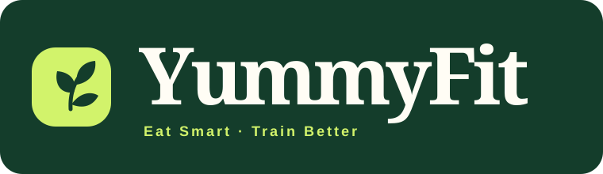
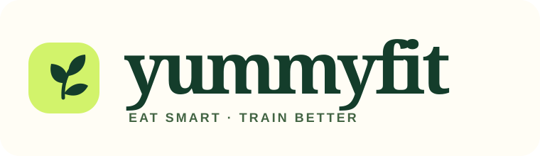
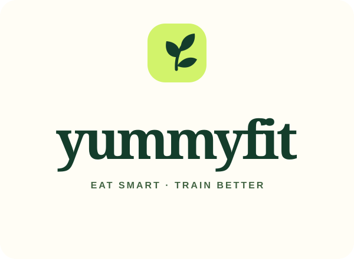
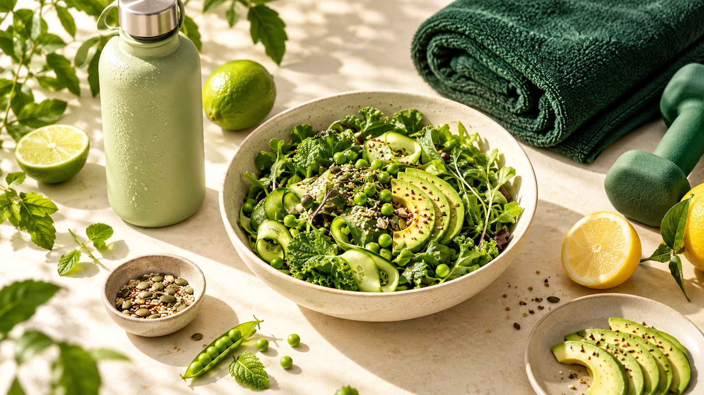
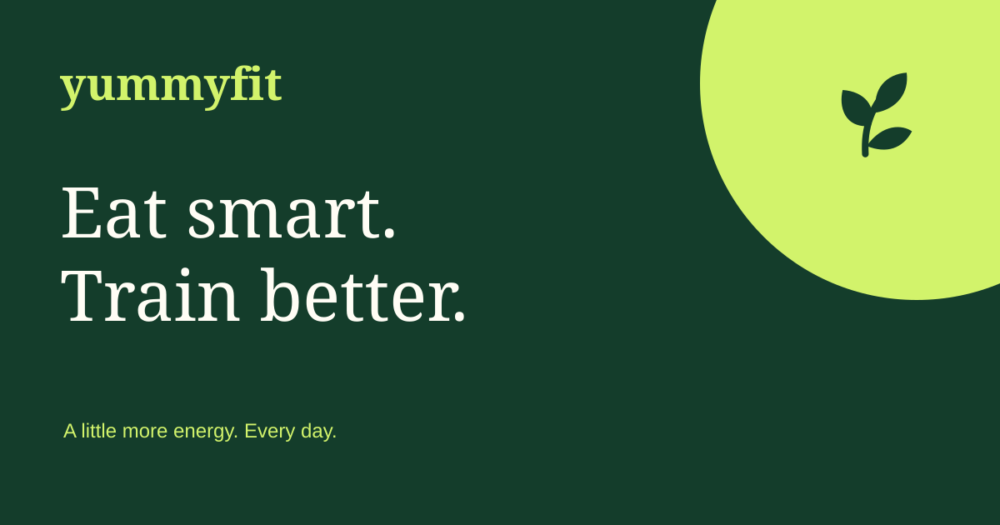

YUMMYFIT / BRAND SYSTEM 01
Fresh Momentum.
Healthy living should feel energizing, approachable and delicious. Keep the familiar botanical soul, add a crisp sprout and confident lime accents, and give every message room to breathe.

Identity

Horizontal lockup · navigation, presentations

Stacked lockup · packaging, square formats
Sprout mark · app icon, favicon, avatars
Vitality palette
Type & rhythm
Healthy living, made effortless.
Georgia for editorial headlines and the lowercase wordmark. Inter for body copy and controls. Use 16px body copy, generous line height, rounded cards and pill-shaped primary actions. Font fallbacks keep the site usable without network fonts.
Usage rules
Leave at least half an icon width of clear space. Minimum horizontal logo width: 170px; standalone mark: 20px. Use the white/cream logo on Forest and the Forest logo on Cream. Never stretch, rotate or add shadows to the wordmark. Lime is an accent and a button surface with Forest text; avoid white body text on Lime. Form headings and labels on Forest are white.
Voice
Warm, practical, encouraging. Lead with small achievable steps: “A little more energy. Every day.” Avoid guilt, body judgement and unsupported health claims. Keep the established tagline: “Eat smart · Train better.”
Campaign system


Use natural food textures, daylight, real ingredients and tactile workout objects. Mix generous Cream space with Forest blocks and one vivid Lime focal point.
Deliverables
Scalable SVG horizontal, reversed and stacked logos; full-color and monochrome marks; seamless botanical pattern; 1200 × 630 social card; JSON design tokens. PNG logo exports at 4× and a 4096px brand-board export are supplied in this folder. SVG artwork remains sharp at any resolution.